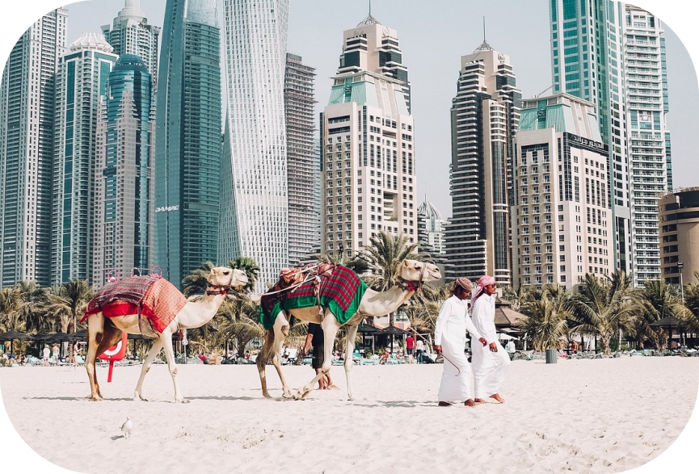
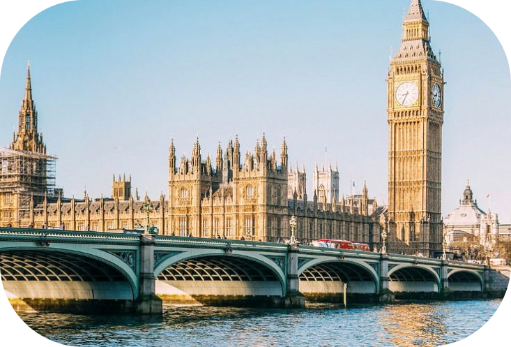
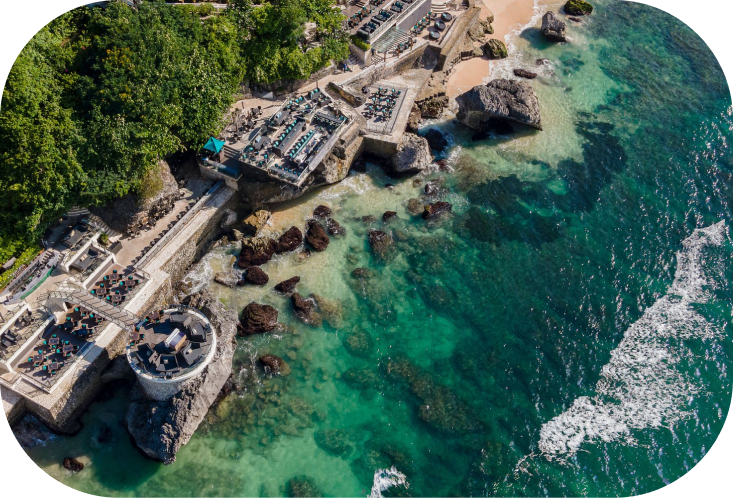
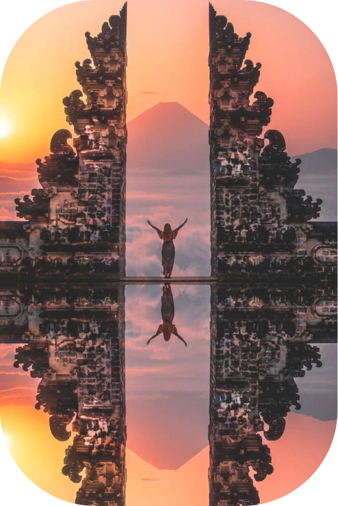
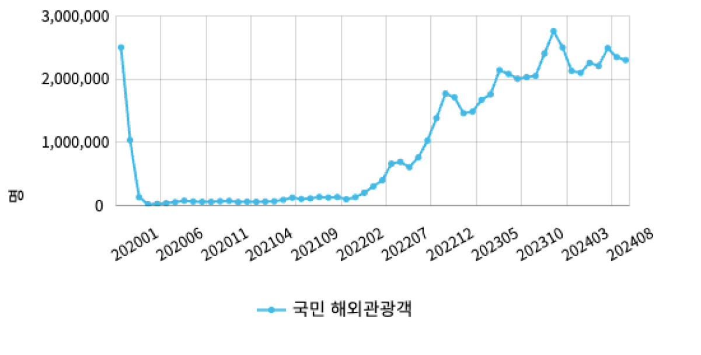
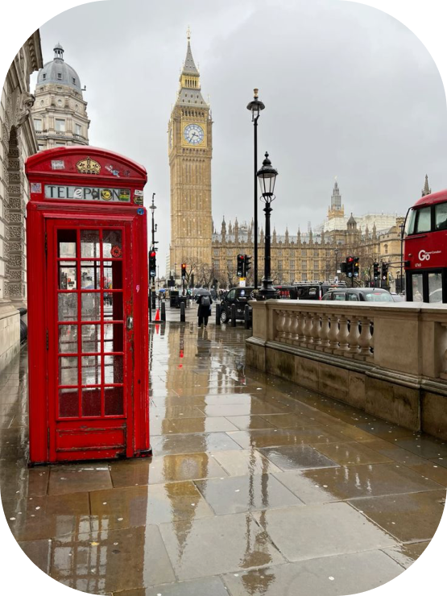
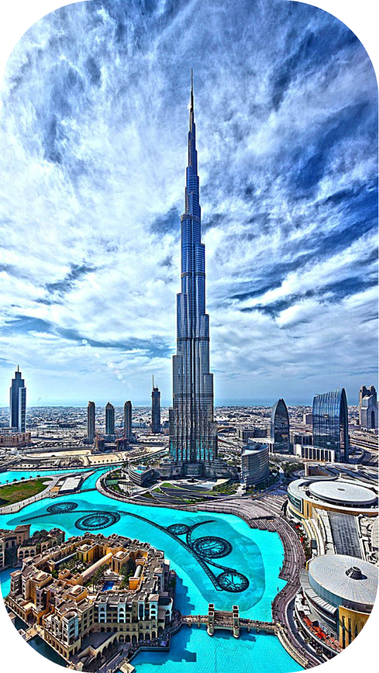

당신의 다음 목적지는 어디인가요?



초현대적인 건축물로 유명한 두바이는 부르즈 할리파 같은 상징적인 랜드마크부터
귀금속 상점, 고급 쇼핑몰까지 모든 것이 눈길을 사로잡는 매력을
지니고 있습니다. 이곳에서는 상상할 수 있는 거의 모든 것을 경험할 수 있으며
여행자들에게 잊지 못할 추억을 선사합니다. 도시 한가운데서 실내 스키를
즐기거나, 사막의 모래 언덕 위에서 짜릿한 서핑을 체험할 수 있습니다. 또한,
도시 상공에서 집라인을 타며 두바이의 화려한 전경을 감상하는 스릴 넘치는
순간도 놓칠 수 없습니다. 하지만 두바이는 단순히 현대적이고 화려한 면모만
있는 것이 아닙니다. 알 파히디 역사지구의 골목을 거닐며 19세기 중반 두바이의
전통적인 모습을 발견할 수 있습니다. 바람탑 건축 양식으로 지어진 집들과 좁은
골목길은 과거와 현재가 공존하는 특별한 분위기를 만들어냅니다. 현대적인
즐거움과 전통적인 매력을 모두 갖춘 두바이는 누구에게나 특별한 경험을
제공합니다
런던은 예술, 역사, 문화 등 모든 분야에서 세계적인 중심지로 손꼽히는 거대한
도시입니다. 이 도시는 다양한 매력을 지니고 있으며,
무엇보다도 지역마다 고유한 분위기가 돋보이는 것이 특징입니다. 예를 들어,
세계적으로 유명한 박물관과 공원을 산책하며
여유로운 시간을 보낼 수 있는가 하면, 현대적인 감각이 넘치는 쇼디치에서는
독특한 상점과 거리의 벽화를 감상할 수 있습니다.이후 소호로 이동하면
활기찬 분위기의 펍에서 맥주를 즐기거나 클럽에서 새벽까지 파티를 즐기는 등
완전히 다른 매력을 경험할 수 있습니다.
런던은 이처럼 전통과 현대가 조화를 이루며, 한 도시 안에서도 다채로운 문화와
라이프스타일을 체험할 수 있는 독특한 매력을 자랑합니다.

Travellers’ Choice 어워드
베스트 오브 베스트 여행지

코로나 이후로 다시 늘어나고 있는 여행
혹시 여행을 계획 중이신가요?
여행은 우리의 삶에 활력을 불어넣고 새로운 경험과 시야를 제공합니다. 최근 전
세계적으로 여행 수요가 급증하며, 많은 이들이 잠시 멈췄던 모험을 다시
시작하고 있습니다. 숨겨진 자연의 아름다움을 발견하거나 낯선 도시의 매력을
느끼며 일상에서 벗어나 보는 것은 어떨까요? 지금이야말로 꿈꿔왔던 여행지를
향해 떠날 완벽한 시간입니다.
이 곳 에서 당신만의 특별한 여행을 계획해보세요!
01.두바이
북쪽의 세쿰풀 폭포처럼 숨 막히게 아름다운 자연 경관부터 남쪽 냥냥의 평화로운
백사장에 이르기까지, 발리는 하나의 작은 섬임에도 불구하고 그 매력은 끝이
없습니다. 이 섬은 자연과 문화, 그리고 현대적인 즐길 거리가 완벽하게 어우러진
곳입니다. 북쪽에는 장엄한 폭포와 무성한 열대우림이 기다리고 있고, 남쪽으로
내려오면 햇살이 부드럽게 내리쬐는 황금빛 해변이 펼쳐져 있습니다. 바투 볼롱의
서퍼들에게 완벽한 파도는 물론, 스미냑의 활기찬 나이트클럽에서는 화려한 밤을
즐길 수 있습니다. 또한 누사두아의 절벽 위에 자리 잡은 고급 호텔은 럭셔리한
휴가를 원하는 이들에게 이상적인 선택지입니다. 발리의 곳곳에 자리한 영적인
사원과 유적들은 여행자들에게 특별한 경험을 선사하며, 평온함과 깊은 영감을
제공합니다. 발리는 그야말로 모든 여행자가 꿈꾸는 완벽한 여행지입니다.
02.발리
03.런던
코로나19 팬데믹 이후, 국내에서 해외여행을 떠나는 관광객의 수가 급증하는
추세를 보이고 있습니다. 팬데믹 동안 억제되었던 해외 여행의 수요가 폭발적으로
증가하면서, 많은 사람들이 제한된 일상에서 벗어나 새로운 경험을 쌓고자 해외로
향하고 있습니다. 특히, 안전한 여행지와 다양한 관광 상품을 찾는 수요가
늘어나며, 여행업계는 이를 반영한 맞춤형 여행 패키지와 서비스를 제공하고
있습니다. 이러한 변화는 글로벌 여행 산업에 큰 영향을 미치고 있으며, 여행
트렌드의 재편성을 예고하고 있습니다.

